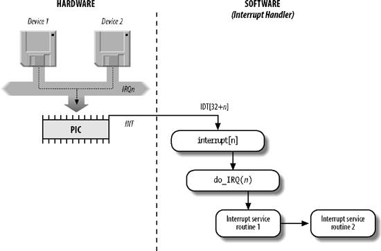
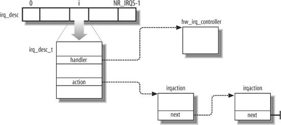

{% include JB/setup %}
{% raw %}
<div>


<a name="understandlk-CHP-4-SECT-6"></a>
<h3 class="docSection1Title">4.6. Interrupt Handling</h3><a name="IDX-CHP-4-1186"></a>
<a name="IDX-CHP-4-1187"></a>
<a name="IDX-CHP-4-1188"></a>
<p class="docText1">As we explained earlier, most exceptions are handled simply by sending a Unix signal to the process that caused the exception. The action to be taken is thus deferred until the process receives the signal; as a result, the kernel is able to process the exception quickly.</p>
<p class="docText1">This approach does not hold for interrupts, because they frequently arrive long after the process to which they are related (for instance, a process that requested a data transfer) has been suspended and a completely unrelated process is running. So it would make no sense to send a Unix signal to the current process.</p>
<p class="docText1">Interrupt handling depends on the type of interrupt. For our purposes, we'll distinguish three main classes of interrupts:</p>
<dl class="docText1"><dt class="calibre7"><br class="calibre7"/><p class="calibre14"><span class="docPubcolor"><span class="docEmphasis">I/O interrupts</span></span></p></dt>
<dd class="calibre20"><p class="docList">An I/O device requires attention; the corresponding interrupt handler must query the device to determine the proper course of action. We cover this type of interrupt in the later section "<a class="pcalibre5 docLink pcalibre1" href="#understandlk-CHP-4-FIG-4">I/O Interrupt Handling</a>."</p></dd><dt class="calibre7"><br class="calibre7"/><p class="calibre14"><span class="docPubcolor"><span class="docEmphasis">Timer interrupts</span></span></p></dt>
<dd class="calibre20"><p class="docList">Some timer, either a local APIC timer or an external timer, has issued an interrupt; this kind of interrupt tells the kernel that a fixed-time interval has elapsed. These interrupts are handled mostly as I/O interrupts; we discuss the peculiar characteristics of timer interrupts in <a class="pcalibre5 docLink pcalibre1" href="understandlk-CHP-6.html#understandlk-CHP-6">Chapter 6</a>.</p></dd><dt class="calibre7"><br class="calibre7"/><p class="calibre14"><span class="docPubcolor"><span class="docEmphasis">Interprocessor interrupts</span></span></p></dt>
<dd class="calibre20"><p class="docList">A CPU issued an interrupt to another CPU of a multiprocessor system. We cover such interrupts in the later section "<a class="pcalibre5 docLink pcalibre1" href="#understandlk-CHP-4-SECT-6.2">Interprocessor Interrupt Handling</a>."</p></dd></dl>
<a name="understandlk-CHP-4-SECT-6.1"></a>
<h4 class="docSection2Title">4.6.1. I/O Interrupt Handling</h4><a name="IDX-CHP-4-1189"></a>
<a name="IDX-CHP-4-1190"></a>
<a name="IDX-CHP-4-1191"></a>
<p class="docText1">In general, an I/O interrupt handler must be flexible enough to service several devices at the same time. In the PCI bus architecture, for instance, several devices may share the same IRQ line. This means that the interrupt vector alone does not tell the whole story. In the example shown in <a class="pcalibre5 docLink pcalibre1" href="#understandlk-CHP-4-TABLE-3">Table 4-3</a>, the same vector 43 is assigned to the USB port and to the sound card. However, some hardware devices found in older PC architectures (such as ISA) do not reliably operate if their IRQ line is shared with other devices.</p>
<p class="docText1">Interrupt handler flexibility is achieved in two distinct ways, as discussed in the following list.</p>
<a name="IDX-CHP-4-1192"></a><dl class="docText1"><dt class="calibre7"><br class="calibre7"/><p class="calibre14"><span class="docPubcolor"><span class="docEmphasis">IRQ sharing</span></span></p></dt>
<dd class="calibre20"><p class="docList">The interrupt handler executes several <span class="docEmphasis">interrupt service routines</span><a name="IDX-CHP-4-1192"></a> 
 (<span class="docEmphasis">ISRs</span>). Each ISR is a function related to a single device sharing the IRQ line. Because it is not possible to know in advance which particular device issued the IRQ, each ISR is executed to verify whether its device needs attention; if so, the ISR performs all the operations that need to be executed when the device raises an interrupt.</p></dd><dt class="calibre7"><br class="calibre7"/><p class="calibre14"><span class="docPubcolor"><span class="docEmphasis">IRQ dynamic allocation</span></span></p></dt>
<dd class="calibre20"><p class="docList">An IRQ line is associated with a device driver at the last possible moment; for instance, the IRQ line of the floppy device is allocated only when a user accesses the floppy disk device. In this way, the same IRQ vector may be used by several hardware devices even if they cannot share the IRQ line; of course, the hardware devices cannot be used at the same time. (See the discussion at the end of this section.)</p></dd></dl>
<p class="docText1">Not all actions to be performed when an interrupt occurs have the same urgency. In fact, the interrupt handler itself is not a suitable place for all kind of actions. Long noncritical operations should be deferred, because while an interrupt handler is running, the signals on the corresponding IRQ line are temporarily ignored. Most important, the process on behalf of which an interrupt handler is executed must always stay in the <tt class="calibre25">TASK_RUNNING</tt> state, or a system freeze can occur. Therefore, interrupt handlers cannot perform any blocking procedure such as an I/O disk operation. Linux divides the actions to be performed following an interrupt into three classes:</p>
<dl class="docText1"><dt class="calibre7"><br class="calibre7"/><p class="calibre14"><span class="docPubcolor"><span class="docEmphasis">Critical</span></span></p></dt>
<dd class="calibre20"><p class="docList">Actions such as acknowledging an interrupt to the PIC, reprogramming the PIC or the device controller, or updating data structures accessed by both the device and the processor. These can be executed quickly and are critical, because they must be performed as soon as possible. Critical actions are executed within the interrupt handler immediately, with maskable interrupts disabled.</p></dd><dt class="calibre7"><br class="calibre7"/><p class="calibre14"><span class="docPubcolor"><span class="docEmphasis">Noncritical</span></span></p></dt>
<dd class="calibre20"><p class="docList">Actions such as updating data structures that are accessed only by the processor (for instance, reading the scan code after a keyboard key has been pushed). These actions can also finish quickly, so they are executed by the interrupt handler immediately, with the interrupts enabled.</p></dd><dt class="calibre7"><br class="calibre7"/><p class="calibre14"><span class="docPubcolor"><span class="docEmphasis">Noncritical deferrable</span></span></p></dt>
<dd class="calibre20"><p class="docList">Actions such as copying a buffer's contents into the address space of a process (for instance, sending the keyboard line buffer to the terminal handler process). These may be delayed for a long time interval without affecting the kernel operations; the interested process will just keep waiting for the data. Noncritical deferrable actions are performed by means of separate functions that are discussed in the later section "<a class="pcalibre5 docLink pcalibre1" href="understandlk-CHP-4-SECT-7.html#understandlk-CHP-4-SECT-7">Softirqs and Tasklets</a>."</p></dd></dl>
<p class="docText1">Regardless of the kind of circuit that caused the interrupt, all I/O interrupt handlers perform the same four basic actions:</p>
<div class="calibre44"><ol class="docList1" type="1"><li class="calibre12"><div class="calibre45"><p class="docList">Save the IRQ value and the register's contents on the Kernel Mode stack.</p></div></li><li class="calibre12"><div class="calibre45"><p class="docList">Send an acknowledgment to the PIC that is servicing the IRQ line, thus allowing it to issue further interrupts.</p></div></li><li class="calibre12"><div class="calibre45"><p class="docList">Execute the interrupt service routines (ISRs) associated with all the devices that share the IRQ.</p></div></li><li class="calibre12"><div class="calibre45"><p class="docList">Terminate by jumping to the <tt class="calibre25">ret_from_intr( )</tt> address.</p></div></li></ol></div>
<p class="docText1">Several descriptors are needed to represent both the state of the IRQ lines and the functions to be executed when an interrupt occurs. <a class="pcalibre5 docLink pcalibre1" href="#understandlk-CHP-4-FIG-4">Figure 4-4</a> represents in a schematic way the hardware circuits and the software functions used to handle an interrupt. These functions are discussed in the following sections.</p>
<a name="understandlk-CHP-4-SECT-6.1.1"></a>
<h5 class="docSection3Title">4.6.1.1. Interrupt vectors</h5><a name="IDX-CHP-4-1193"></a>
<a name="IDX-CHP-4-1194"></a>
<a name="IDX-CHP-4-1195"></a>
<a name="IDX-CHP-4-1196"></a>
<a name="IDX-CHP-4-1197"></a>
<a name="IDX-CHP-4-1198"></a>
<a name="IDX-CHP-4-1199"></a>
<p class="docText1">As illustrated in <a class="pcalibre5 docLink pcalibre1" href="#understandlk-CHP-4-TABLE-2">Table 4-2</a>, physical IRQs may be assigned any vector in the range 32-238. However, Linux uses vector 128 to implement system calls.</p>
<p class="docText1">The IBM-compatible PC architecture requires that some devices be statically connected to specific IRQ lines. In particular:</p>
<ul class="calibre11"><li class="calibre12"><p class="docText1">The interval timer device must be connected to the IRQ 0 line (see <a class="pcalibre5 docLink pcalibre1" href="understandlk-CHP-6.html#understandlk-CHP-6">Chapter 6</a>).</p></li><li class="calibre12"><p class="docText1">The slave 8259A PIC must be connected to the IRQ 2 line (although more advanced PICs are now being used, Linux still supports 8259A-style PICs).</p><a name="understandlk-CHP-4-FIG-4"></a><p class="calibre14"><center class="calibre8">
<h5 class="docFigureTitle">Figure 4-4. I/O interrupt handling</h5>
</center></p></li><li class="calibre12"><p class="docText1">The external mathematical coprocessor must be connected to the IRQ 13 line (although recent 80 x 86 processors no longer use such a device, Linux continues to support the hardy 80386 model).</p></li><li class="calibre12"><p class="docText1">In general, an I/O device can be connected to a limited number of IRQ lines. (As a matter of fact, when playing with an old PC where IRQ sharing is not possible, you might not succeed in installing a new card because of IRQ conflicts with other already present hardware devices.)</p></li></ul>
<a name="understandlk-CHP-4-TABLE-2"></a><p class="calibre14"><table cellspacing="0" frame="hsides" rules="all" cellpadding="4" width="100%" class="calibre15"><caption class="calibre33"><h5 class="docFigureTitle">Table 4-2. Interrupt vectors in Linux</h5></caption><colgroup class="calibre16"><col class="calibre17"/><col class="calibre17"/></colgroup><thead class="calibre18"><tr class="calibre34"><th class="thead" scope="col"><p class="docText1"><span class="calibre5">Vector range</span></p></th><th class="thead" scope="col"><p class="docText1"><span class="calibre5">Use</span></p></th></tr></thead><tr class="calibre2"><td class="docTableCell"><p class="docText2">019 <tt class="calibre25">(0x0</tt>-<tt class="calibre25">0x13)</tt></p></td><td class="docTableCell"><p class="docText2">Nonmaskable interrupts and exceptions</p></td></tr><tr class="calibre2"><td class="docTableCell"><p class="docText2">2031 <tt class="calibre25">(0x14</tt>-<tt class="calibre25">0x1f)</tt></p></td><td class="docTableCell"><p class="docText2">Intel-reserved</p></td></tr><tr class="calibre2"><td class="docTableCell"><p class="docText2">32127 <tt class="calibre25">(0x20</tt>-<tt class="calibre25">0x7f)</tt></p></td><td class="docTableCell"><p class="docText2">External interrupts (IRQs)</p></td></tr><tr class="calibre2"><td class="docTableCell"><p class="docText2">128 <tt class="calibre25">(0x80)</tt></p></td><td class="docTableCell"><p class="docText2">Programmed exception for system calls (see <a class="pcalibre5 docLink pcalibre1" href="understandlk-CHP-10.html#understandlk-CHP-10">Chapter 10</a>)</p></td></tr><tr class="calibre2"><td class="docTableCell"><p class="docText2">129238 <tt class="calibre25">(0x81</tt>-<tt class="calibre25">0xee)</tt></p></td><td class="docTableCell"><p class="docText2">External interrupts (IRQs)</p></td></tr><tr class="calibre2"><td class="docTableCell"><p class="docText2">239 <tt class="calibre25">(0xef)</tt></p></td><td class="docTableCell"><p class="docText2">Local APIC timer interrupt (see <a class="pcalibre5 docLink pcalibre1" href="understandlk-CHP-6.html#understandlk-CHP-6">Chapter 6</a>)</p></td></tr><tr class="calibre2"><td class="docTableCell"><p class="docText2">240 (<tt class="calibre25">0xf0</tt>)</p></td><td class="docTableCell"><p class="docText2">Local APIC thermal interrupt (introduced in the Pentium 4 models)</p></td></tr><tr class="calibre2"><td class="docTableCell"><p class="docText2">241250 <tt class="calibre25">(0xf1</tt>-<tt class="calibre25">0xfa)</tt></p></td><td class="docTableCell"><p class="docText2">Reserved by Linux for future use</p></td></tr><tr class="calibre2"><td class="docTableCell"><p class="docText2">251253 <tt class="calibre25">(0xfb</tt>-<tt class="calibre25">0xfd)</tt></p></td><td class="docTableCell"><p class="docText2">Interprocessor interrupts (see the section "<a class="pcalibre5 docLink pcalibre1" href="#understandlk-CHP-4-SECT-6.2">Interprocessor Interrupt Handling</a>" later in this chapter)</p></td></tr><tr class="calibre2"><td class="docTableCell"><p class="docText2">254 (<tt class="calibre25">0xfe</tt>)</p></td><td class="docTableCell"><p class="docText2">Local APIC error interrupt (generated when the local APIC detects an erroneous condition)</p></td></tr><tr class="calibre2"><td class="docTableCell" valign="top"><p class="docText2">255 (<tt class="calibre25">0xff</tt>)</p></td><td class="docTableCell"><p class="docText2">Local APIC spurious interrupt (generated if the CPU masks an interrupt while the hardware device raises it)</p></td></tr></table></p><br class="calibre7"/>
<p class="docText1">There are three ways to select a line for an IRQ-configurable device:</p>
<ul class="calibre11"><li class="calibre12"><p class="docText1">By setting hardware jumpers (only on very old device cards).</p></li><li class="calibre12"><p class="docText1">By a utility program shipped with the device and executed when installing it. Such a program may either ask the user to select an available IRQ number or probe the system to determine an available number by itself.</p></li><li class="calibre12"><p class="docText1">By a hardware protocol executed at system startup. Peripheral devices declare which interrupt lines they are ready to use; the final values are then negotiated to reduce conflicts as much as possible. Once this is done, each interrupt handler can read the assigned IRQ by using a function that accesses some I/O ports of the device. For instance, drivers for devices that comply with the Peripheral Component Interconnect (PCI) standard use a group of functions such as <tt class="calibre25">pci_read_config_byte( )</tt> to access the device configuration space.</p></li></ul>
<p class="docText1"><a class="pcalibre5 docLink pcalibre1" href="#understandlk-CHP-4-TABLE-3">Table 4-3</a> shows a fairly arbitrary arrangement of devices and IRQs, such as those that might be found on one particular PC.</p>
<a name="understandlk-CHP-4-TABLE-3"></a><p class="calibre14"><table cellspacing="0" frame="hsides" rules="all" cellpadding="4" width="100%" class="calibre15"><caption class="calibre33"><h5 class="docFigureTitle">Table 4-3. An example of IRQ assignment to I/O devices</h5></caption><colgroup class="calibre16"><col class="calibre17"/><col class="calibre17"/><col class="calibre17"/></colgroup><thead class="calibre18"><tr class="calibre34"><th class="thead" scope="col"><p class="docText1"><span class="calibre5">IRQ</span></p></th><th class="thead" scope="col"><p class="docText1"><span class="calibre5">INT</span></p></th><th class="thead" scope="col"><p class="docText1"><span class="calibre5">Hardware device</span></p></th></tr></thead><tr class="calibre2"><td class="docTableCell"><p class="docText2">0</p></td><td class="docTableCell"><p class="docText2">32</p></td><td class="docTableCell"><p class="docText2">Timer</p></td></tr><tr class="calibre2"><td class="docTableCell"><p class="docText2">1</p></td><td class="docTableCell"><p class="docText2">33</p></td><td class="docTableCell"><p class="docText2">Keyboard</p></td></tr><tr class="calibre2"><td class="docTableCell"><p class="docText2">2</p></td><td class="docTableCell"><p class="docText2">34</p></td><td class="docTableCell"><p class="docText2">PIC cascading</p></td></tr><tr class="calibre2"><td class="docTableCell"><p class="docText2">3</p></td><td class="docTableCell"><p class="docText2">35</p></td><td class="docTableCell"><p class="docText2">Second serial port</p></td></tr><tr class="calibre2"><td class="docTableCell"><p class="docText2">4</p></td><td class="docTableCell"><p class="docText2">36</p></td><td class="docTableCell"><p class="docText2">First serial port</p></td></tr><tr class="calibre2"><td class="docTableCell"><p class="docText2">6</p></td><td class="docTableCell"><p class="docText2">38</p></td><td class="docTableCell"><p class="docText2">Floppy disk</p></td></tr><tr class="calibre2"><td class="docTableCell"><p class="docText2">8</p></td><td class="docTableCell"><p class="docText2">40</p></td><td class="docTableCell"><p class="docText2">System clock</p></td></tr><tr class="calibre2"><td class="docTableCell"><p class="docText2">10</p></td><td class="docTableCell"><p class="docText2">42</p></td><td class="docTableCell"><p class="docText2">Network interface</p></td></tr><tr class="calibre2"><td class="docTableCell"><p class="docText2">11</p></td><td class="docTableCell"><p class="docText2">43</p></td><td class="docTableCell"><p class="docText2">USB port, sound card</p></td></tr><tr class="calibre2"><td class="docTableCell"><p class="docText2">12</p></td><td class="docTableCell"><p class="docText2">44</p></td><td class="docTableCell"><p class="docText2">PS/2 mouse</p></td></tr><tr class="calibre2"><td class="docTableCell"><p class="docText2">13</p></td><td class="docTableCell"><p class="docText2">45</p></td><td class="docTableCell"><p class="docText2">Mathematical coprocessor</p></td></tr><tr class="calibre2"><td class="docTableCell"><p class="docText2">14</p></td><td class="docTableCell"><p class="docText2">46</p></td><td class="docTableCell"><p class="docText2">EIDE disk controller's first chain</p></td></tr><tr class="calibre2"><td class="docTableCell"><p class="docText2">15</p></td><td class="docTableCell"><p class="docText2">47</p></td><td class="docTableCell"><p class="docText2">EIDE disk controller's second chain</p></td></tr></table></p><br class="calibre7"/>
<p class="docText1">The kernel must discover which I/O device corresponds to the IRQ number before enabling interrupts. Otherwise, for example, how could the kernel handle a signal from a SCSI disk without knowing which vector corresponds to the device? The correspondence is established while initializing each device driver (see <a class="pcalibre5 docLink pcalibre1" href="understandlk-CHP-13.html#understandlk-CHP-13">Chapter 13</a>).</p>
<a name="understandlk-CHP-4-SECT-6.1.2"></a>
<h5 class="docSection3Title">4.6.1.2. IRQ data structures</h5><a name="IDX-CHP-4-1200"></a>
<a name="IDX-CHP-4-1201"></a>
<a name="IDX-CHP-4-1202"></a>
<a name="IDX-CHP-4-1203"></a>
<a name="IDX-CHP-4-1204"></a>
<a name="IDX-CHP-4-1205"></a>
<a name="IDX-CHP-4-1206"></a>
<a name="IDX-CHP-4-1207"></a>
<a name="IDX-CHP-4-1208"></a>
<a name="IDX-CHP-4-1209"></a>
<a name="IDX-CHP-4-1210"></a>
<a name="IDX-CHP-4-1211"></a>
<a name="IDX-CHP-4-1212"></a>
<a name="IDX-CHP-4-1213"></a>
<a name="IDX-CHP-4-1214"></a>
<a name="IDX-CHP-4-1215"></a>
<a name="IDX-CHP-4-1216"></a>
<a name="IDX-CHP-4-1217"></a>
<a name="IDX-CHP-4-1218"></a>
<a name="IDX-CHP-4-1219"></a>
<a name="IDX-CHP-4-1220"></a>
<a name="IDX-CHP-4-1221"></a>
<a name="IDX-CHP-4-1222"></a>
<a name="IDX-CHP-4-1223"></a>
<a name="IDX-CHP-4-1224"></a>
<a name="IDX-CHP-4-1225"></a>
<a name="IDX-CHP-4-1226"></a>
<a name="IDX-CHP-4-1227"></a>
<a name="IDX-CHP-4-1228"></a>
<p class="docText1">As always, when discussing complicated operations involving state transitions, it helps to understand first where key data is stored. Thus, this section explains the data structures that support interrupt handling and how they are laid out in various descriptors. <a class="pcalibre5 docLink pcalibre1" href="#understandlk-CHP-4-FIG-5">Figure 4-5</a> illustrates schematically the relationships between the main descriptors that represent the state of the IRQ lines. (The figure does not illustrate the data structures needed to handle softirqs and tasklets; they are discussed later in this chapter.)</p>
<a name="understandlk-CHP-4-FIG-5"></a><p class="calibre14"><center class="calibre8">
<h5 class="docFigureTitle">Figure 4-5. IRQ descriptors</h5>
</center></p><br class="calibre7"/>
<p class="docText1">Every interrupt vector has its own <tt class="calibre25">irq_desc_t</tt> descriptor, whose fields are listed in <a class="pcalibre5 docLink pcalibre1" href="#understandlk-CHP-4-TABLE-4">Table 4-4</a>. All such descriptors are grouped together in the <tt class="calibre25">irq_desc</tt> array.</p>
<a name="understandlk-CHP-4-TABLE-4"></a><p class="calibre14"><table cellspacing="0" frame="hsides" rules="all" cellpadding="4" width="100%" class="calibre15"><caption class="calibre33"><h5 class="docFigureTitle">Table 4-4. The irq_desc_t descriptor</h5></caption><colgroup class="calibre16"><col class="calibre17"/><col class="calibre17"/></colgroup><thead class="calibre18"><tr class="calibre34"><th class="thead" scope="col"><p class="docText1"><span class="calibre5">Field</span></p></th><th class="thead" scope="col"><p class="docText1"><span class="calibre5">Description</span></p></th></tr></thead><tr class="calibre2"><td class="docTableCell"><p class="docText2"><tt class="calibre25">handler</tt></p></td><td class="docTableCell"><p class="docText2">Points to the PIC object (<tt class="calibre25">hw_irq_controller</tt> descriptor) that services the IRQ line.</p></td></tr><tr class="calibre2"><td class="docTableCell"><p class="docText2"><tt class="calibre25">handler_data</tt></p></td><td class="docTableCell"><p class="docText2">Pointer to data used by the PIC methods.</p></td></tr><tr class="calibre2"><td class="docTableCell" valign="top"><p class="docText2"><tt class="calibre25">action</tt></p></td><td class="docTableCell"><p class="docText2">Identifies the interrupt service routines<a name="IDX-CHP-4-1229"></a> 
 to be invoked when the IRQ occurs. The field points to the first element of the list of <tt class="calibre25">irqaction</tt> descriptors associated with the IRQ. The <tt class="calibre25">irqaction</tt> descriptor is described later in the chapter.</p></td></tr><tr class="calibre2"><td class="docTableCell"><p class="docText2"><tt class="calibre25">status</tt></p></td><td class="docTableCell"><p class="docText2">A set of flags describing the IRQ line status (see <a class="pcalibre5 docLink pcalibre1" href="#understandlk-CHP-4-TABLE-5">Table 4-5</a>).</p></td></tr><tr class="calibre2"><td class="docTableCell"><p class="docText2"><tt class="calibre25">depth</tt></p></td><td class="docTableCell"><p class="docText2">Shows 0 if the IRQ line is enabled and a positive value if it has been disabled at least once.</p></td></tr><tr class="calibre2"><td class="docTableCell"><p class="docText2"><tt class="calibre25">irq_count</tt></p></td><td class="docTableCell"><p class="docText2">Counter of interrupt occurrences on the IRQ line (for diagnostic use only).</p></td></tr><tr class="calibre2"><td class="docTableCell"><p class="docText2"><tt class="calibre25">irqs_unhandled</tt></p></td><td class="docTableCell"><p class="docText2">Counter of unhandled interrupt occurrences on the IRQ line (for diagnostic use only).</p></td></tr><tr class="calibre2"><td class="docTableCell"><p class="docText2"><tt class="calibre25">lock</tt></p></td><td class="docTableCell"><p class="docText2">A spin lock used to serialize the accesses to the IRQ descriptor and to the PIC (see <a class="pcalibre5 docLink pcalibre1" href="understandlk-CHP-5.html#understandlk-CHP-5">Chapter 5</a>).</p></td></tr></table></p><br class="calibre7"/>
<p class="docText1">An interrupt is <span class="docEmphasis">unexpected</span><a name="IDX-CHP-4-1230"></a> 
 if it is not handled by the kernel, that is, either if there is no ISR associated with the IRQ line, or if no ISR associated with the line recognizes the interrupt as raised by its own hardware device. Usually the kernel checks the number of unexpected interrupts received on an IRQ line, so as to disable the line in case a faulty hardware device keeps raising an interrupt over and over. Because the IRQ line can be shared among several devices, the kernel does not disable the line as soon as it detects a single unhandled<a name="IDX-CHP-4-1231"></a> 
 interrupt. Rather, the kernel stores in the <tt class="calibre25">irq_count</tt> and <tt class="calibre25">irqs_unhandled</tt> fields of the <tt class="calibre25">irq_desc_t</tt> descriptor the total number of interrupts and the number of unexpected interrupts, respectively; when the 100,000<sup class="calibre37">th</sup> interrupt is raised, the kernel disables the line if the number of unhandled interrupts is above 99,900 (that is, if less than 101 interrupts over the last 100,000 received are expected interrupts from hardware devices sharing the line).</p>
<p class="docText1">The status of an IRQ line is described by the flags listed in <a class="pcalibre5 docLink pcalibre1" href="#understandlk-CHP-4-TABLE-5">Table 4-5</a>.</p>
<a name="understandlk-CHP-4-TABLE-5"></a><p class="calibre14"><table cellspacing="0" frame="hsides" rules="all" cellpadding="4" width="100%" class="calibre15"><caption class="calibre33"><h5 class="docFigureTitle">Table 4-5. Flags describing the IRQ line status</h5></caption><colgroup class="calibre16"><col class="calibre17"/><col class="calibre17"/></colgroup><thead class="calibre18"><tr class="calibre34"><th class="thead" scope="col"><p class="docText1"><span class="calibre5">Flag name</span></p></th><th class="thead" scope="col"><p class="docText1"><span class="calibre5">Description</span></p></th></tr></thead><tr class="calibre2"><td class="docTableCell"><p class="docText2"><tt class="calibre25">IRQ_INPROGRESS</tt></p></td><td class="docTableCell"><p class="docText2">A handler for the IRQ is being executed.</p></td></tr><tr class="calibre2"><td class="docTableCell"><p class="docText2"><tt class="calibre25">IRQ_DISABLED</tt></p></td><td class="docTableCell"><p class="docText2">The IRQ line has been deliberately disabled by a device driver.</p></td></tr><tr class="calibre2"><td class="docTableCell"><p class="docText2"><tt class="calibre25">IRQ_PENDING</tt></p></td><td class="docTableCell"><p class="docText2">An IRQ has occurred on the line; its occurrence has been acknowledged to the PIC, but it has not yet been serviced by the kernel.</p></td></tr><tr class="calibre2"><td class="docTableCell"><p class="docText2"><tt class="calibre25">IRQ_REPLAY</tt></p></td><td class="docTableCell"><p class="docText2">The IRQ line has been disabled but the previous IRQ occurrence has not yet been acknowledged to the PIC.</p></td></tr><tr class="calibre2"><td class="docTableCell"><p class="docText2"><tt class="calibre25">IRQ_AUTODETECT</tt></p></td><td class="docTableCell"><p class="docText2">The kernel is using the IRQ line while performing a hardware device probe.</p></td></tr><tr class="calibre2"><td class="docTableCell"><p class="docText2"><tt class="calibre25">IRQ_WAITING</tt></p></td><td class="docTableCell"><p class="docText2">The kernel is using the IRQ line while performing a hardware device probe; moreover, the corresponding interrupt has not been raised.</p></td></tr><tr class="calibre2"><td class="docTableCell"><p class="docText2"><tt class="calibre25">IRQ_LEVEL</tt></p></td><td class="docTableCell"><p class="docText2">Not used on the 80 x 86 architecture.</p></td></tr><tr class="calibre2"><td class="docTableCell"><p class="docText2"><tt class="calibre25">IRQ_MASKED</tt></p></td><td class="docTableCell"><p class="docText2">Not used.</p></td></tr><tr class="calibre2"><td class="docTableCell"><p class="docText2"><tt class="calibre25">IRQ_PER_CPU</tt></p></td><td class="docTableCell"><p class="docText2">Not used on the 80 x 86 architecture.</p></td></tr></table></p><br class="calibre7"/>
<p class="docText1">The <tt class="calibre25">depth</tt> field and the <tt class="calibre25">IRQ_DISABLED</tt> flag of the <tt class="calibre25">irq_desc_t</tt> descriptor specify whether the IRQ line is enabled or disabled. Every time the <tt class="calibre25">disable_irq( )</tt> or <tt class="calibre25">disable_irq_nosync( )</tt> function is invoked, the <tt class="calibre25">depth</tt> field is increased; if <tt class="calibre25">depth</tt> is equal to 0, the function disables the IRQ line and sets its <tt class="calibre25">IRQ_DISABLED</tt> flag.<sup class="docFootnote"><a class="pcalibre5 docLink pcalibre1" href="#understandlk-CHP-4-FN8">[*]</a></sup> Conversely, each invocation of the <tt class="calibre25">enable_irq( )</tt> function decreases the field; if <tt class="calibre25">depth</tt> becomes 0, the function enables the IRQ line and clears its <tt class="calibre25">IRQ_DISABLED</tt> flag.</p><blockquote class="calibre22"><p class="docFootnote1"><sup class="calibre24"><a name="understandlk-CHP-4-FN8">[*]</a></sup> In contrast to <tt class="calibre42">disable_irq_nosync( )</tt>, <tt class="calibre42">disable_irq(n)</tt> waits until all interrupt handlers for IRQ <span class="docEmphasis">n</span> that are running on other CPUs have completed before returning.</p></blockquote>
<p class="docText1">During system initialization, the <tt class="calibre25">init_IRQ( )</tt> function sets the <tt class="calibre25">status</tt> field of each IRQ main descriptor to <tt class="calibre25">IRQ _DISABLED</tt>. Moreover, <tt class="calibre25">init_IRQ( )</tt> updates the IDT by replacing the interrupt gates set up by <tt class="calibre25">setup_idt( )</tt> (see the section "<a class="pcalibre5 docLink pcalibre1" href="understandlk-CHP-4-SECT-4.html#understandlk-CHP-4-SECT-4.2">Preliminary Initialization of the IDT</a>," earlier in this chapter) with new ones. This is accomplished through the following statements:</p>
<pre class="calibre27">
    for (i = 0; i &lt; NR_IRQS; i++)
       if (i+32 != 128)
           set_intr_gate(i+32,interrupt[i]);</pre><br class="calibre7"/>
<p class="docText1">This code looks in the <tt class="calibre25">interrupt</tt> array to find the interrupt handler addresses that it uses to set up the interrupt gates<a name="IDX-CHP-4-1232"></a> 
. Each entry <span class="docEmphasis">n</span> of the <tt class="calibre25">interrupt</tt> array stores the address of the interrupt handler for IRQ <span class="docEmphasis">n</span> (see the later section "<a class="pcalibre5 docLink pcalibre1" href="#understandlk-CHP-4-SECT-6.1.5">Saving the registers for the interrupt handler</a>"). Notice that the interrupt gate corresponding to vector 128 is left untouched, because it is used for the system call's programmed exception.</p>
<p class="docText1">In addition to the 8259A chip that was mentioned near the beginning of this chapter, Linux supports several other PIC circuits such as the SMP IO-APIC, Intel PIIX4's internal 8259 PIC, and SGI's Visual Workstation Cobalt (IO-)APIC. To handle all such devices in a uniform way, Linux uses a <span class="docEmphasis">PIC object</span>, consisting of the PIC name and seven PIC standard methods. The advantage of this object-oriented approach is that drivers need not to be aware of the kind of PIC installed in the system. Each driver-visible interrupt source is transparently wired to the appropriate controller. The data structure that defines a PIC object is called <tt class="calibre25">hw_interrupt_type</tt> (also called <tt class="calibre25">hw_irq_controller</tt>).</p>
<p class="docText1">For the sake of concreteness, let's assume that our computer is a uniprocessor with two 8259A PICs, which provide 16 standard IRQs. In this case, the <tt class="calibre25">handler</tt> field in each of the 16 <tt class="calibre25">irq_desc_t</tt> descriptors points to the <tt class="calibre25">i8259A_irq_type</tt> variable, which describes the 8259A PIC. This variable is initialized as follows:</p>
<pre class="calibre27">
    struct hw_interrupt_type i8259A_irq_type = {
        .typename     = "XT-PIC",
        .startup      = startup_8259A_irq,
        .shutdown     = shutdown_8259A_irq,
        .enable       = enable_8259A_irq,
        .disable      = disable_8259A_irq,
        .ack          = mask_and_ack_8259A,
        .end          = end_8259A_irq,
        .set_affinity = NULL
    };</pre><br class="calibre7"/>
<p class="docText1">The first field in this structure, <tt class="calibre25">"XT-PIC"</tt>, is the PIC name. Next come the pointers to six different functions used to program the PIC. The first two functions start up and shut down an IRQ line of the chip, respectively. But in the case of the 8259A chip, these functions coincide with the third and fourth functions, which enable and disable the line. The <tt class="calibre25">mask_and_ack_8259A( )</tt> function acknowledges the IRQ received by sending the proper bytes to the 8259A I/O ports. The <tt class="calibre25">end_8259A_irq( )</tt> function is invoked when the interrupt handler for the IRQ line terminates. The last <tt class="calibre25">set_affinity</tt> method is set to <tt class="calibre25">NULL</tt>: it is used in multiprocessor systems to declare the "affinity" of CPUs for specified IRQs  that is, which CPUs are enabled to handle specific IRQs.</p>
<p class="docText1">As described earlier, multiple devices can share a single IRQ. Therefore, the kernel maintains <tt class="calibre25">irqaction</tt> descriptors (see <a class="pcalibre5 docLink pcalibre1" href="#understandlk-CHP-4-FIG-5">Figure 4-5</a> earlier in this chapter), each of which refers to a specific hardware device and a specific interrupt. The fields included in such descriptor are shown in <a class="pcalibre5 docLink pcalibre1" href="#understandlk-CHP-4-TABLE-6">Table 4-6</a>, and the flags are shown in <a class="pcalibre5 docLink pcalibre1" href="#understandlk-CHP-4-TABLE-7">Table 4-7</a>.</p>
<a name="understandlk-CHP-4-TABLE-6"></a><p class="calibre14"><table cellspacing="0" frame="hsides" rules="all" cellpadding="4" width="100%" class="calibre15"><caption class="calibre33"><h5 class="docFigureTitle">Table 4-6. Fields of the irqaction descriptor</h5></caption><colgroup class="calibre16"><col class="calibre17"/><col class="calibre17"/></colgroup><thead class="calibre18"><tr class="calibre34"><th class="thead" scope="col"><p class="docText1"><span class="calibre5">Field name</span></p></th><th class="thead" scope="col"><p class="docText1"><span class="calibre5">Description</span></p></th></tr></thead><tr class="calibre2"><td class="docTableCell"><p class="docText2"><tt class="calibre25">handler</tt></p></td><td class="docTableCell"><p class="docText2">Points to the interrupt service routine for an I/O device. This is the key field that allows many devices to share the same IRQ.</p></td></tr><tr class="calibre2"><td class="docTableCell"><p class="docText2"><tt class="calibre25">flags</tt></p></td><td class="docTableCell"><p class="docText2">This field includes a few fields that describe the relationships between the IRQ line and the I/O device (see <a class="pcalibre5 docLink pcalibre1" href="#understandlk-CHP-4-TABLE-7">Table 4-7</a>).</p></td></tr><tr class="calibre2"><td class="docTableCell"><p class="docText2"><tt class="calibre25">mask</tt></p></td><td class="docTableCell"><p class="docText2">Not used.</p></td></tr><tr class="calibre2"><td class="docTableCell"><p class="docText2"><tt class="calibre25">name</tt></p></td><td class="docTableCell"><p class="docText2">The name of the I/O device (shown when listing the serviced IRQs by reading the <span class="docEmphasis">/proc/interrupts</span> file).</p></td></tr><tr class="calibre2"><td class="docTableCell" valign="top"><p class="docText2"><tt class="calibre25">dev_id</tt></p></td><td class="docTableCell"><p class="docText2">A private field for the I/O device. Typically, it identifies the I/O device itself (for instance, it could be equal to its major and minor numbers; see the section "<a class="pcalibre5 docLink pcalibre1" href="understandlk-CHP-13-SECT-3.html#understandlk-CHP-13-SECT-3">Device Files</a>" in <a class="pcalibre5 docLink pcalibre1" href="understandlk-CHP-13.html#understandlk-CHP-13">Chapter 13</a>), or it points to the device driver's data.</p></td></tr><tr class="calibre2"><td class="docTableCell"><p class="docText2"><tt class="calibre25">next</tt></p></td><td class="docTableCell"><p class="docText2">Points to the next element of a list of <tt class="calibre25">irqaction</tt> descriptors. The elements in the list refer to hardware devices that share the same IRQ.</p></td></tr><tr class="calibre2"><td class="docTableCell"><p class="docText2">irq</p></td><td class="docTableCell"><p class="docText2">IRQ line.</p></td></tr><tr class="calibre2"><td class="docTableCell"><p class="docText2">dir</p></td><td class="docTableCell"><p class="docText2">Points to the descriptor of the <span class="docEmphasis">/proc/irq/n</span> directory associated with the IRQ<span class="docEmphasis">n</span>.</p></td></tr></table></p><br class="calibre7"/>
<a name="understandlk-CHP-4-TABLE-7"></a><p class="calibre14"><table cellspacing="0" frame="hsides" rules="all" cellpadding="4" width="100%" class="calibre15"><caption class="calibre33"><h5 class="docFigureTitle">Table 4-7. Flags of the irqaction descriptor</h5></caption><colgroup class="calibre16"><col class="calibre17"/><col class="calibre17"/></colgroup><thead class="calibre18"><tr class="calibre34"><th class="thead" scope="col"><p class="docText1"><span class="calibre5">Flag name</span></p></th><th class="thead" scope="col"><p class="docText1"><span class="calibre5">Description</span></p></th></tr></thead><tr class="calibre2"><td class="docTableCell"><p class="docText2"><tt class="calibre25">SA_INTERRUPT</tt></p></td><td class="docTableCell"><p class="docText2">The handler must execute with interrupts disabled.</p></td></tr><tr class="calibre2"><td class="docTableCell"><p class="docText2"><tt class="calibre25">SA_SHIRQ</tt></p></td><td class="docTableCell"><p class="docText2">The device permits its IRQ line to be shared with other devices.</p></td></tr><tr class="calibre2"><td class="docTableCell" valign="top"><p class="docText2"><tt class="calibre25">SA_SAMPLE_RANDOM</tt></p></td><td class="docTableCell"><p class="docText2">The device may be considered a source of events that occurs randomly; it can thus be used by the kernel random number generator. (Users can access this feature by taking random numbers from the <span class="docEmphasis">/dev/random</span> and <span class="docEmphasis">/dev/urandom</span> device files.)</p></td></tr></table></p><br class="calibre7"/>
<p class="docText1">Finally, the <tt class="calibre25">irq_stat</tt> array includes <tt class="calibre25">NR_CPUS</tt> entries, one for every possible CPU in the system. Each entry of type <tt class="calibre25">irq_cpustat_t</tt> includes a few counters and flags used by the kernel to keep track of what each CPU is currently doing (see <a class="pcalibre5 docLink pcalibre1" href="#understandlk-CHP-4-TABLE-8">Table 4-8</a>).</p>
<a name="understandlk-CHP-4-TABLE-8"></a><p class="calibre14"><table cellspacing="0" frame="hsides" rules="all" cellpadding="4" width="100%" class="calibre15"><caption class="calibre33"><h5 class="docFigureTitle">Table 4-8. Fields of the irq_cpustat_t structure</h5></caption><colgroup class="calibre16"><col class="calibre17"/><col class="calibre17"/></colgroup><thead class="calibre18"><tr class="calibre34"><th class="thead" scope="col"><p class="docText1"><span class="calibre5">Field name</span></p></th><th class="thead" scope="col"><p class="docText1"><span class="calibre5">Description</span></p></th></tr></thead><tr class="calibre2"><td class="docTableCell"><p class="docText2"><tt class="calibre25">_ _softirq_pending</tt></p></td><td class="docTableCell"><p class="docText2">Set of flags denoting the pending softirqs (see the section "<a class="pcalibre5 docLink pcalibre1" href="understandlk-CHP-4-SECT-7.html#understandlk-CHP-4-SECT-7.1">Softirqs</a>" later in this chapter)</p></td></tr><tr class="calibre2"><td class="docTableCell"><p class="docText2"><tt class="calibre25">idle_timestamp</tt></p></td><td class="docTableCell"><p class="docText2">Time when the CPU became idle (significant only if the CPU is currently idle)</p></td></tr><tr class="calibre2"><td class="docTableCell"><p class="docText2"><tt class="calibre25">_ _nmi_count</tt></p></td><td class="docTableCell"><p class="docText2">Number of occurrences of NMI interrupts<a name="IDX-CHP-4-1233"></a>
</p></td></tr><tr class="calibre2"><td class="docTableCell"><p class="docText2"><tt class="calibre25">apic_timer_irqs</tt></p></td><td class="docTableCell"><p class="docText2">Number of occurrences of local APIC timer interrupts (see <a class="pcalibre5 docLink pcalibre1" href="understandlk-CHP-6.html#understandlk-CHP-6">Chapter 6</a>)</p></td></tr></table></p><br class="calibre7"/>
<a name="understandlk-CHP-4-SECT-6.1.3"></a>
<h5 class="docSection3Title">4.6.1.3. IRQ distribution in multiprocessor systems</h5><a name="IDX-CHP-4-1234"></a>
<a name="IDX-CHP-4-1235"></a>
<a name="IDX-CHP-4-1236"></a>
<a name="IDX-CHP-4-1237"></a>
<a name="IDX-CHP-4-1238"></a>
<a name="IDX-CHP-4-1239"></a>
<a name="IDX-CHP-4-1240"></a>
<a name="IDX-CHP-4-1241"></a>
<a name="IDX-CHP-4-1242"></a>
<a name="IDX-CHP-4-1243"></a>
<a name="IDX-CHP-4-1244"></a>
<a name="IDX-CHP-4-1245"></a>
<p class="docText1">Linux sticks to the Symmetric Multiprocessing model (SMP<a name="IDX-CHP-4-1246"></a> 
); this means, essentially, that the kernel should not have any bias toward one CPU with respect to the others. As a consequence, the kernel tries to distribute the IRQ signals coming from the hardware devices in a round-robin fashion among all the CPUs. Therefore, all the CPUs should spend approximately the same fraction of their execution time servicing I/O interrupts.</p>
<p class="docText1">In the earlier section "<a class="pcalibre5 docLink pcalibre1" href="understandlk-CHP-4-SECT-2.html#understandlk-CHP-4-SECT-2.1.1">The Advanced Programmable Interrupt Controller (APIC)</a>," we said that the multi-APIC system has sophisticated mechanisms to dynamically distribute the IRQ signals among the CPUs.</p>
<p class="docText1">During system bootstrap, the booting CPU executes the <tt class="calibre25">setup_IO_APIC_irqs( )</tt> function to initialize the I/O APIC chip. The 24 entries of the Interrupt Redirection Table of the chip are filled, so that all IRQ signals from the I/O hardware devices can be routed to each CPU in the system according to the "lowest priority" scheme (see the earlier section "<a class="pcalibre5 docLink pcalibre1" href="understandlk-CHP-4-SECT-2.html#understandlk-CHP-4-SECT-2.1">IRQs and Interrupts</a>"). During system bootstrap, moreover, all CPUs execute the <tt class="calibre25">setup_local_APIC( )</tt> function, which takes care of initializing the local APICs. In particular, the task priority register (TPR) of each chip is initialized to a fixed value, meaning that the CPU is willing to handle every kind of IRQ signal, regardless of its priority. The Linux kernel never modifies this value after its initialization.</p>
<p class="docText1">All task priority registers contain the same value, thus all CPUs always have the same priority. To break a tie, the multi-APIC system uses the values in the arbitration priority registers of local APICs, as explained earlier. Because such values are automatically changed after every interrupt, the IRQ signals are, in most cases, fairly distributed among all CPUs.<sup class="docFootnote"><a class="pcalibre5 docLink pcalibre1" href="#understandlk-CHP-4-FN9">[*]</a></sup></p><blockquote class="calibre22"><p class="docFootnote1"><sup class="calibre24"><a name="understandlk-CHP-4-FN9">[*]</a></sup> There is an exception, though. Linux usually sets up the local APICs in such a way to honor the <span class="docEmphasis">focus processor</span>, when it exists. A focus process will catch all IRQs of the same type as long as it has received an IRQ of that type, and it has not finished executing the interrupt handler. However, Intel has dropped support for focus processors<a name="IDX-CHP-4-1247"></a> 
 in the Pentium 4 model.</p></blockquote>
<p class="docText1">In short, when a hardware device raises an IRQ signal, the multi-APIC system selects one of the CPUs and delivers the signal to the corresponding local APIC, which in turn interrupts its CPU. No other CPUs are notified of the event.</p>
<p class="docText1">All this is magically done by the hardware, so it should be of no concern for the kernel after multi-APIC system initialization. Unfortunately, in some cases the hardware fails to distribute the interrupts among the microprocessors in a fair way (for instance, some Pentium 4-based SMP motherboards have this problem). Therefore, Linux 2.6 makes use of a special kernel thread called <span class="docEmphasis">kirqd</span><a name="IDX-CHP-4-1248"></a> 
 to correct, if necessary, the automatic assignment of IRQs to CPUs.</p>
<p class="docText1">The kernel thread exploits a nice feature of multi-APIC systems, called the IRQ affinity<a name="IDX-CHP-4-1249"></a> 
 of a CPU: by modifying the Interrupt Redirection Table entries of the I/O APIC, it is possible to route an interrupt signal to a specific CPU. This can be done by invoking the <tt class="calibre25">set_ioapic_affinity_irq( )</tt> function, which acts on two parameters: the IRQ vector to be rerouted and a 32-bit mask denoting the CPUs that can receive the IRQ. The IRQ affinity of a given interrupt also can be changed by the system administrator by writing a new CPU bitmap mask into the <i class="docEmphasis">/proc/irq/n/smp_affinity</i> file (<span class="docEmphasis">n</span> being the interrupt vector).</p>
<p class="docText1">The <span class="docEmphasis">kirqd</span> kernel thread periodically executes the <tt class="calibre25">do_irq_balance( )</tt> function, which keeps track of the number of interrupt occurrences received by every CPU in the most recent time interval. If the function discovers that the IRQ load imbalance between the heaviest loaded CPU and the least loaded CPU is significantly high, then it either selects an IRQ to be "moved" from a CPU to another, or rotates all IRQs among all existing CPUs.</p>
<a name="understandlk-CHP-4-SECT-6.1.4"></a>
<h5 class="docSection3Title">4.6.1.4. Multiple Kernel Mode stacks</h5><a name="IDX-CHP-4-1250"></a>
<a name="IDX-CHP-4-1251"></a>
<a name="IDX-CHP-4-1252"></a>
<a name="IDX-CHP-4-1253"></a>
<a name="IDX-CHP-4-1254"></a>
<a name="IDX-CHP-4-1255"></a>
<p class="docText1">As mentioned in the section "<a class="pcalibre5 docLink pcalibre1" href="understandlk-CHP-3-SECT-2.html#understandlk-CHP-3-SECT-2.2">Identifying a Process</a>" in <a class="pcalibre5 docLink pcalibre1" href="understandlk-CHP-3.html#understandlk-CHP-3">Chapter 3</a>, the <tt class="calibre25">thread_info</tt> descriptor of each process is coupled with a Kernel Mode stack in a <tt class="calibre25">thread_union</tt> data structure composed by one or two page frames, according to an option selected when the kernel has been compiled. If the size of the <tt class="calibre25">tHRead_union</tt> structure is 8 KB, the Kernel Mode stack of the current process is used for every type of kernel control path: exceptions, interrupts, and deferrable functions (see the later section "<a class="pcalibre5 docLink pcalibre1" href="understandlk-CHP-4-SECT-7.html#understandlk-CHP-4-SECT-7">Softirqs and Tasklets</a>"). Conversely, if the size of the <tt class="calibre25">thread_union</tt> structure is 4 KB, the kernel makes use of three types of Kernel Mode stacks:</p>
<ul class="calibre11"><li class="calibre12"><p class="docText1">The <span class="docEmphasis">exception stack</span><a name="IDX-CHP-4-1256"></a> 
 is used when handling exceptions (including system calls). This is the stack contained in the per-process <tt class="calibre25">thread_union</tt> data structure, thus the kernel makes use of a different exception stack for each process in the system.</p></li><li class="calibre12"><p class="docText1">The <span class="docEmphasis">hard IRQ stack</span><a name="IDX-CHP-4-1257"></a> 
 is used when handling interrupts. There is one hard IRQ stack for each CPU in the system, and each stack is contained in a single page frame.</p></li><li class="calibre12"><p class="docText1">The <span class="docEmphasis">soft IRQ stack</span><a name="IDX-CHP-4-1258"></a> 
 is used when handling deferrable functions (softirqs or tasklets; see the later section "<a class="pcalibre5 docLink pcalibre1" href="understandlk-CHP-4-SECT-7.html#understandlk-CHP-4-SECT-7">Softirqs and Tasklets</a>"). There is one soft IRQ stack for each CPU in the system, and each stack is contained in a single page frame.</p></li></ul>
<p class="docText1">All hard IRQ stacks are contained in the <tt class="calibre25">hardirq_stack</tt> array, while all soft IRQ stacks are contained in the <tt class="calibre25">softirq_stack</tt> array. Each array element is a union of type <tt class="calibre25">irq_ctx</tt> that span a single page. At the bottom of this page is stored a <tt class="calibre25">thread_info</tt> structure, while the spare memory locations are used for the stack; remember that each stack grows towards lower addresses. Thus, hard IRQ stacks and soft IRQ stacks are very similar to the exception stacks described in the section "<a class="pcalibre5 docLink pcalibre1" href="understandlk-CHP-3-SECT-2.html#understandlk-CHP-3-SECT-2.2">Identifying a Process</a>" in <a class="pcalibre5 docLink pcalibre1" href="understandlk-CHP-3.html#understandlk-CHP-3">Chapter 3</a>; the only difference is that the <tt class="calibre25">tHRead_info</tt> structure coupled with each stack is associated with a CPU rather than a process.</p>
<p class="docText1">The <tt class="calibre25">hardirq_ctx</tt> and <tt class="calibre25">softirq_ctx</tt> arrays allow the kernel to quickly determine the hard IRQ stack and soft IRQ stack of a given CPU, respectively: they contain pointers to the corresponding <tt class="calibre25">irq_ctx</tt> elements.</p>
<a name="understandlk-CHP-4-SECT-6.1.5"></a>
<h5 class="docSection3Title">4.6.1.5. Saving the registers for the interrupt handler</h5><a name="IDX-CHP-4-1259"></a>
<a name="IDX-CHP-4-1260"></a>
<p class="docText1">When a CPU receives an interrupt, it starts executing the code at the address found in the corresponding gate of the IDT (see the earlier section "<a class="pcalibre5 docLink pcalibre1" href="understandlk-CHP-4-SECT-2.html#understandlk-CHP-4-SECT-2.4">Hardware Handling of Interrupts and Exceptions</a>").</p>
<p class="docText1">As with other context switches, the need to save registers leaves the kernel developer with a somewhat messy coding job, because the registers have to be saved and restored using assembly language code. However, within those operations, the processor is expected to call and return from a C function. In this section, we describe the assembly language task of handling registers; in the next, we show some of the acrobatics required in the C function that is subsequently invoked.</p>
<p class="docText1">Saving registers is the first task of the interrupt handler. As already mentioned, the address of the interrupt handler for IRQ <span class="docEmphasis">n</span> is initially stored in the <tt class="calibre25">interrupt[n]</tt> enTRy and then copied into the interrupt gate included in the proper IDT entry.</p>
<p class="docText1">The <tt class="calibre25">interrupt</tt> array is built through a few assembly language instructions in the <i class="docEmphasis">arch/i386/kernel/entry.S</i><a name="IDX-CHP-4-1261"></a> 
 file. The array includes <tt class="calibre25">NR_IRQS</tt> elements, where the <tt class="calibre25">NR_IRQS</tt> macro yields either the number 224 if the kernel supports a recent I/O APIC chip,<sup class="docFootnote"><a class="pcalibre5 docLink pcalibre1" href="#understandlk-CHP-4-FN10">[*]</a></sup> or the number 16 if the kernel uses the older 8259A PIC chips. The element at index <span class="docEmphasis">n</span> in the array stores the address of the following two assembly language instructions:</p><blockquote class="calibre22"><p class="docFootnote1"><sup class="calibre24"><a name="understandlk-CHP-4-FN10">[*]</a></sup> 256 vectors is an architectural limit for the 80x86 architecture. 32 of them are used or reserved for the CPU, so the usable vector space consists of 224 vectors.</p></blockquote>
<pre class="calibre27">
        pushl $<span class="docEmphasis">n</span>-256
        jmp common_interrupt</pre><br class="calibre7"/>
<p class="docText1">The result is to save on the stack the IRQ number associated with the interrupt minus 256. The kernel represents all IRQs through negative numbers, because it reserves positive interrupt numbers to identify system calls (see <a class="pcalibre5 docLink pcalibre1" href="understandlk-CHP-10.html#understandlk-CHP-10">Chapter 10</a>). The same code for all interrupt handlers can then be executed while referring to this number. The common code starts at label <tt class="calibre25">common_interrupt</tt> and consists of the following assembly language macros and instructions:</p>
<pre class="calibre27">
    common_interrupt:
        SAVE_ALL
        movl %esp,%eax
        call do_IRQ
        jmp ret_from_intr</pre><br class="calibre7"/>
<p class="docText1">The <tt class="calibre25">SAVE_ALL</tt> macro expands to the following fragment:</p>
<pre class="calibre27">
    cld
    push %es
    push %ds
    pushl %eax
    pushl %ebp
    pushl %edi
    pushl %esi
    pushl %edx
    pushl %ecx
    pushl %ebx
    movl $ _ _USER_DS,%edx
    movl %edx,%ds
    movl %edx,%es</pre><br class="calibre7"/>
<p class="docText1"><tt class="calibre25">SAVE_ALL</tt> saves all the CPU registers that may be used by the interrupt handler on the stack, except for <tt class="calibre25">eflags</tt><a name="IDX-CHP-4-1262"></a> 
, <tt class="calibre25">cs</tt>, <tt class="calibre25">eip</tt>, <tt class="calibre25">ss</tt>, and <tt class="calibre25">esp</tt>, which are already saved automatically by the control unit (see the earlier section "<a class="pcalibre5 docLink pcalibre1" href="understandlk-CHP-4-SECT-2.html#understandlk-CHP-4-SECT-2.4">Hardware Handling of Interrupts and Exceptions</a>"). The macro then loads the selector of the user data segment into <tt class="calibre25">ds</tt> and <tt class="calibre25">es</tt>.</p>
<p class="docText1">After saving the registers, the address of the current top stack location is saved in the <tt class="calibre25">eax</tt> register; then, the interrupt handler invokes the <tt class="calibre25">do_IRQ( )</tt> function. When the <tt class="calibre25">ret</tt> instruction of <tt class="calibre25">do_IRQ( )</tt> is executed (when that function terminates) control is transferred to <tt class="calibre25">ret_from_intr( )</tt> (see the later section "<a class="pcalibre5 docLink pcalibre1" href="understandlk-CHP-4-SECT-9.html#understandlk-CHP-4-SECT-9">Returning from Interrupts and Exceptions</a>").</p>
<a name="understandlk-CHP-4-SECT-6.1.6"></a>
<h5 class="docSection3Title">4.6.1.6. The do_IRQ( ) function</h5><a name="IDX-CHP-4-1263"></a>
<a name="IDX-CHP-4-1264"></a>
<p class="docText1">The <tt class="calibre25">do_IRQ( )</tt> function is invoked to execute all interrupt service routines<a name="IDX-CHP-4-1265"></a> 
 associated with an interrupt. It is declared as follows:</p>
<pre class="calibre27">
    _ _attribute_ _((regparm(3))) unsigned int do_IRQ(struct pt_regs *regs)</pre><br class="calibre7"/>
<p class="docText1">The <tt class="calibre25">regparm</tt> keyword instructs the function to go to the <tt class="calibre25">eax</tt> register to find the value of the <tt class="calibre25">regs</tt> argument; as seen above, <tt class="calibre25">eax</tt> points to the stack location containing the last register value pushed on by <tt class="calibre25">SAVE_ALL</tt>.</p>
<p class="docText1">The <tt class="calibre25">do_IRQ( )</tt> function executes the following actions:</p>
<div class="calibre44"><ol class="docList1" type="1"><li class="calibre12"><div class="calibre45"><p class="docList">Executes the <tt class="calibre25">irq_enter( )</tt> macro, which increases a counter representing the number of nested interrupt handlers. The counter is stored in the <tt class="calibre25">preempt_count</tt> field of the <tt class="calibre25">tHRead_info</tt> structure of the current process (see <a class="pcalibre5 docLink pcalibre1" href="understandlk-CHP-4-SECT-7.html#understandlk-CHP-4-TABLE-10">Table 4-10</a> later in this chapter).</p></div></li><li class="calibre12"><div class="calibre45"><p class="docList">If the size of the <tt class="calibre25">thread_union</tt> structure is 4 KB, it switches to the hard IRQ stack.In particular, the function performs the following substeps:</p><div class="calibre44"><ol class="docList4" type="a"><li class="calibre12"><div class="calibre45"><p class="docList">Executes the <tt class="calibre25">current_thread_info( )</tt> function to get the address of the <tt class="calibre25">tHRead_info</tt> descriptor associated with the Kernel Mode stack addressed by the <tt class="calibre25">esp</tt> register (see the section "<a class="pcalibre5 docLink pcalibre1" href="understandlk-CHP-3-SECT-2.html#understandlk-CHP-3-SECT-2.2">Identifying a Process</a>" in <a class="pcalibre5 docLink pcalibre1" href="understandlk-CHP-3.html#understandlk-CHP-3">Chapter 3</a>).</p></div></li><li class="calibre12"><div class="calibre45"><p class="docList">Compares the address of the <tt class="calibre25">tHRead_info</tt> descriptor obtained in the previous step with the address stored in <tt class="calibre25">hardirq_ctx[smp_processor_id( )]</tt>, that is, the address of the <tt class="calibre25">thread_info</tt> descriptor associated with the local CPU. If the two addresses are equal, the kernel is already using the hard IRQ stack, thus jumps to step 3. This happens when an IRQ is raised while the kernel is still handling another interrupt.</p></div></li><li class="calibre12"><div class="calibre45"><p class="docList">Here the Kernel Mode stack has to be switched. Stores the pointer to the current process descriptor in the <tt class="calibre25">task</tt> field of the <tt class="calibre25">tHRead_info</tt> descriptor in <tt class="calibre25">irq_ctx</tt> union of the local CPU. This is done so that the <tt class="calibre25">current</tt> macro works as expected while the kernel is using the hard IRQ stack (see the section "<a class="pcalibre5 docLink pcalibre1" href="understandlk-CHP-3-SECT-2.html#understandlk-CHP-3-SECT-2.2">Identifying a Process</a>" in <a class="pcalibre5 docLink pcalibre1" href="understandlk-CHP-3.html#understandlk-CHP-3">Chapter 3</a>).</p></div></li><li class="calibre12"><div class="calibre45"><p class="docList">Stores the current value of the <tt class="calibre25">esp</tt> stack pointer register in the <tt class="calibre25">previous_esp</tt> field of the <tt class="calibre25">thread_info</tt> descriptor in the <tt class="calibre25">irq_ctx</tt> union of the local CPU (this field is used only when preparing the function call trace for a kernel oops).</p></div></li><li class="calibre12"><div class="calibre45"><p class="docList">Loads in the <tt class="calibre25">esp</tt> stack register the top location of the hard IRQ stack of the local CPU (the value in <tt class="calibre25">hardirq_ctx[smp_processor_id( )]</tt> plus 4096); the previous value of the <tt class="calibre25">esp</tt> register is saved in the <tt class="calibre25">ebx</tt> register.</p></div></li></ol></div></div></li><li class="calibre12"><div class="calibre45"><p class="docList">Invokes the <tt class="calibre25">_ _do_IRQ( )</tt> function passing to it the pointer <tt class="calibre25">regs</tt> and the IRQ number obtained from the <tt class="calibre25">regs-&gt;orig_eax</tt> field (see the following section).</p></div></li><li class="calibre12"><div class="calibre45"><p class="docList">If the hard IRQ stack has been effectively switched in step 2e above, the function copies the original stack pointer from the <tt class="calibre25">ebx</tt> register into the <tt class="calibre25">esp</tt> register, thus switching back to the exception stack or soft IRQ stack that were in use before.</p></div></li><li class="calibre12"><div class="calibre45"><p class="docList">Executes the <tt class="calibre25">irq_exit( )</tt> macro, which decreases the interrupt counter and checks whether deferrable kernel functions are waiting to be executed (see the section "<a class="pcalibre5 docLink pcalibre1" href="understandlk-CHP-4-SECT-7.html#understandlk-CHP-4-SECT-7">Softirqs and Tasklets</a>" later in this chapter).</p></div></li><li class="calibre12"><div class="calibre45"><p class="docList">Terminates: the control is transferred to the <tt class="calibre25">ret_from_intr( )</tt> function (see the later section "<a class="pcalibre5 docLink pcalibre1" href="understandlk-CHP-4-SECT-9.html#understandlk-CHP-4-SECT-9">Returning from Interrupts and Exceptions</a>").</p></div></li></ol></div>
<a name="understandlk-CHP-4-SECT-6.1.7"></a>
<h5 class="docSection3Title">4.6.1.7. The _ _do_IRQ( ) function</h5><a name="IDX-CHP-4-1266"></a>
<a name="IDX-CHP-4-1267"></a>
<p class="docText1">The <tt class="calibre25">_ _do_IRQ( )</tt> function receives as its parameters an IRQ number (through the <tt class="calibre25">eax</tt> register) and a pointer to the <tt class="calibre25">pt_regs</tt> structure where the User Mode register values have been saved (through the <tt class="calibre25">edx</tt> register).</p>
<p class="docText1">The function is equivalent to the following code fragment:</p>
<pre class="calibre27">
    spin_lock(&amp;(irq_desc[irq].lock));
    irq_desc[irq].handler-&gt;ack(irq);
    irq_desc[irq].status &amp;= ~(IRQ_REPLAY | IRQ_WAITING);
    irq_desc[irq].status |= IRQ_PENDING;
    if (!(irq_desc[irq].status &amp; (IRQ_DISABLED | IRQ_INPROGRESS))
            &amp;&amp; irq_desc[irq].action) {
        irq_desc[irq].status |= IRQ_INPROGRESS;
        do {
            irq_desc[irq].status &amp;= ~IRQ_PENDING;
            spin_unlock(&amp;(irq_desc[irq].lock));
            handle_IRQ_event(irq, regs, irq_desc[irq].action);
            spin_lock(&amp;(irq_desc[irq].lock));
        } while (irq_desc[irq].status &amp; IRQ_PENDING);
        irq_desc[irq].status &amp;= ~IRQ_INPROGRESS;
    }
    irq_desc[irq].handler-&gt;end(irq);
    spin_unlock(&amp;(irq_desc[irq].lock));</pre><br class="calibre7"/>
<p class="docText1">Before accessing the main IRQ descriptor, the kernel acquires the corresponding spin lock. We'll see in <a class="pcalibre5 docLink pcalibre1" href="understandlk-CHP-5.html#understandlk-CHP-5">Chapter 5</a> that the spin lock protects against concurrent accesses by different CPUs. This spin lock is necessary in a multiprocessor system, because other interrupts of the same kind may be raised, and other CPUs might take care of the new interrupt occurrences. Without the spin lock, the main IRQ descriptor would be accessed concurrently by several CPUs. As we'll see, this situation must be absolutely avoided.</p>
<p class="docText1">After acquiring the spin lock, the function invokes the <tt class="calibre25">ack</tt> method of the main IRQ descriptor. When using the old 8259A PIC, the corresponding <tt class="calibre25">mask_and_ack_8259A( )</tt> function acknowledges the interrupt on the PIC and also disables the IRQ line. Masking the IRQ line ensures that the CPU does not accept further occurrences of this type of interrupt until the handler terminates. Remember that the <tt class="calibre25">_ _do_IRQ( )</tt> function runs with local interrupts disabled; in fact, the CPU control unit automatically clears the <tt class="calibre25">IF</tt> flag of the <tt class="calibre25">eflags</tt><a name="IDX-CHP-4-1268"></a> 
 register because the interrupt handler is invoked through an IDT's interrupt gate. However, we'll see shortly that the kernel might re-enable local interrupts before executing the interrupt service routines of this interrupt.</p>
<p class="docText1">When using the I/O APIC, however, things are much more complicated. Depending on the type of interrupt, acknowledging the interrupt could either be done by the <tt class="calibre25">ack</tt> method or delayed until the interrupt handler terminates (that is, acknowledgement could be done by the <tt class="calibre25">end</tt> method). In either case, we can take for granted that the local APIC doesn't accept further interrupts of this type until the handler terminates, although further occurrences of this type of interrupt may be accepted by other CPUs.</p>
<p class="docText1">The <tt class="calibre25">_ _do_IRQ( )</tt> function then initializes a few flags of the main IRQ descriptor. It sets the <tt class="calibre25">IRQ_PENDING</tt> flag because the interrupt has been acknowledged (well, sort of), but not yet really serviced; it also clears the <tt class="calibre25">IRQ_WAITING</tt> and <tt class="calibre25">IRQ_REPLAY</tt> flags (but we don't have to care about them now).</p>
<p class="docText1">Now _ _<tt class="calibre25">do_IRQ( )</tt> checks whether it must really handle the interrupt. There are three cases in which nothing has to be done. These are discussed in the following list.</p>
<dl class="docText1"><dt class="calibre7"><br class="calibre7"/><p class="calibre14"><span class="docPubcolor"><span class="docPubcolor"><span class="docMonofont">IRQ_DISABLED</span></span> <span class="docEmphasis">is set</span></span></p></dt>
<dd class="calibre20"><p class="docList">A CPU might execute the <tt class="calibre25">_ _do_IRQ( )</tt> function even if the corresponding IRQ line is disabled; you'll find an explanation for this nonintuitive case in the later section "<a class="pcalibre5 docLink pcalibre1" href="#understandlk-CHP-4-SECT-6.1.8">Reviving a lost interrupt</a>." Moreover, buggy motherboards may generate spurious interrupts even when the IRQ line is disabled in the PIC.</p></dd><dt class="calibre7"><br class="calibre7"/><p class="calibre14"><span class="docPubcolor"><span class="docPubcolor"><span class="docMonofont">IRQ_INPROGRESS</span></span> <span class="docEmphasis">is set</span></span></p></dt>
<dd class="calibre20"><p class="docList">In a multiprocessor system, another CPU might be handling a previous occurrence of the same interrupt. Why not defer the handling of <span class="docEmphasis">this</span> occurrence to <span class="docEmphasis">that</span> CPU? This is exactly what is done by Linux. This leads to a simpler kernel architecture because device drivers' interrupt service routines need not to be reentrant (their execution is serialized). Moreover, the freed CPU can quickly return to what it was doing, without dirtying its hardware cache; this is beneficial to system performance. The <tt class="calibre25">IRQ_INPROGRESS</tt> flag is set whenever a CPU is committed to execute the interrupt service routines of the interrupt; therefore, the <tt class="calibre25">_ _do_IRQ( )</tt> function checks it before starting the real work.</p></dd><dt class="calibre7"><br class="calibre7"/><p class="calibre14"><span class="docPubcolor"><span class="docPubcolor"><span class="docMonofont">irq_desc[irq].action</span></span> <span class="docEmphasis">is</span> <span class="docPubcolor"><span class="docMonofont">NULL</span></span></span></p></dt>
<dd class="calibre20"><p class="docList">This case occurs when there is no interrupt service routine associated with the interrupt. Normally, this happens only when the kernel is probing a hardware device.</p></dd></dl>
<p class="docText1">Let's suppose that none of the three cases holds, so the interrupt has to be serviced. The _ _<tt class="calibre25">do_IRQ( )</tt> function sets the <tt class="calibre25">IRQ_INPROGRESS</tt> flag and starts a loop. In each iteration, the function clears the <tt class="calibre25">IRQ_PENDING</tt> flag, releases the interrupt spin lock, and executes the interrupt service routines by invoking <tt class="calibre25">handle_IRQ_event( )</tt> (described later in the chapter). When the latter function terminates, <tt class="calibre25">_ _do_IRQ( )</tt> acquires the spin lock again and checks the value of the <tt class="calibre25">IRQ_PENDING</tt> flag. If it is clear, no further occurrence of the interrupt has been delivered to another CPU, so the loop ends. Conversely, if <tt class="calibre25">IRQ_PENDING</tt> is set, another CPU has executed the <tt class="calibre25">do_IRQ( )</tt> function for this type of interrupt while this CPU was executing <tt class="calibre25">handle_IRQ_event( )</tt>. Therefore, <tt class="calibre25">do_IRQ( )</tt> performs another iteration of the loop, servicing the new occurrence of the interrupt.<sup class="docFootnote"><a class="pcalibre5 docLink pcalibre1" href="#understandlk-CHP-4-FN11">[*]</a></sup></p><blockquote class="calibre22"><p class="docFootnote1"><sup class="calibre24"><a name="understandlk-CHP-4-FN11">[*]</a></sup> Because <tt class="calibre42">IRQ_PENDING</tt> is a flag and not a counter, only the second occurrence of the interrupt can be recognized. Further occurrences in each iteration of the <tt class="calibre42">do_IRQ( )</tt>'s loop are simply lost.</p></blockquote>
<p class="docText1">Our <tt class="calibre25">_ _do_IRQ( )</tt> function is now going to terminate, either because it has already executed the interrupt service routines or because it had nothing to do. The function invokes the <tt class="calibre25">end</tt> method of the main IRQ descriptor. When using the old 8259A PIC, the corresponding <tt class="calibre25">end_8259A_irq( )</tt> function reenables the IRQ line (unless the interrupt occurrence was spurious). When using the I/O APIC, the <tt class="calibre25">end</tt> method acknowledges the interrupt (if not already done by the <tt class="calibre25">ack</tt> method).</p>
<p class="docText1">Finally, <tt class="calibre25">_ _do_IRQ( )</tt> releases the spin lock: the hard work is finished!</p>
<a name="understandlk-CHP-4-SECT-6.1.8"></a>
<h5 class="docSection3Title">4.6.1.8. Reviving a lost interrupt</h5>
<p class="docText1">The <tt class="calibre25">_ _do_IRQ( )</tt> function is small and simple, yet it works properly in most cases. Indeed, the <tt class="calibre25">IRQ_PENDING</tt>, <tt class="calibre25">IRQ_INPROGRESS</tt>, and <tt class="calibre25">IRQ_DISABLED</tt> flags ensure that interrupts are correctly handled even when the hardware is misbehaving. However, things may not work so smoothly in a multiprocessor system.</p>
<p class="docText1">Suppose that a CPU has an IRQ line enabled. A hardware device raises the IRQ line, and the multi-APIC system selects our CPU for handling the interrupt. Before the CPU acknowledges the interrupt, the IRQ line is masked out by another CPU; as a consequence, the <tt class="calibre25">IRQ_DISABLED</tt> flag is set. Right afterwards, our CPU starts handling the pending interrupt; therefore, the <tt class="calibre25">do_IRQ( )</tt> function acknowledges the interrupt and then returns without executing the interrupt service routines because it finds the <tt class="calibre25">IRQ_DISABLED</tt> flag set. Therefore, even though the interrupt occurred before the IRQ line was disabled, it gets lost.</p>
<p class="docText1">To cope with this scenario, the <tt class="calibre25">enable_irq( )</tt> function, which is used by the kernel to enable an IRQ line, checks first whether an interrupt has been lost. If so, the function forces the hardware to generate a new occurrence of the lost interrupt:</p>
<pre class="calibre27">
    spin_lock_irqsave(&amp;(irq_desc[irq].lock), flags);
    if (--irq_desc[irq].depth == 0) {
        irq_desc[irq].status &amp;= ~IRQ_DISABLED;
        if (irq_desc[irq].status &amp; (IRQ_PENDING | IRQ_REPLAY))
               == IRQ_PENDING) {
            irq_desc[irq].status |= IRQ_REPLAY;
            hw_resend_irq(irq_desc[irq].handler,irq);
        }
        irq_desc[irq].handler-&gt;enable(irq);
    }
    spin_lock_irqrestore(&amp;(irq_desc[irq].lock), flags);</pre><br class="calibre7"/>
<p class="docText1">The function detects that an interrupt was lost by checking the value of the <tt class="calibre25">IRQ_PENDING</tt> flag. The flag is always cleared when leaving the interrupt handler; therefore, if the IRQ line is disabled and the flag is set, then an interrupt occurrence has been acknowledged but not yet serviced. In this case the <tt class="calibre25">hw_resend_irq( )</tt> function raises a new interrupt. This is obtained by forcing the local APIC to generate a self-interrupt (see the later section "<a class="pcalibre5 docLink pcalibre1" href="#understandlk-CHP-4-SECT-6.2">Interprocessor Interrupt Handling</a>"). The role of the <tt class="calibre25">IRQ_REPLAY</tt> flag is to ensure that exactly one self-interrupt is generated. Remember that the _ _<tt class="calibre25">do_IRQ( )</tt> function clears that flag when it starts handling the interrupt.</p>
<a name="understandlk-CHP-4-SECT-6.1.9"></a>
<h5 class="docSection3Title">4.6.1.9. Interrupt service routines</h5><a name="IDX-CHP-4-1269"></a>
<a name="IDX-CHP-4-1270"></a>
<p class="docText1">As mentioned previously, an interrupt service routine handles an interrupt by executing an operation specific to one type of device. When an interrupt handler must execute the ISRs, it invokes the <tt class="calibre25">handle_IRQ_event( )</tt> function. This function essentially performs the following steps:</p>
<div class="calibre44"><ol class="docList1" type="1"><li class="calibre12"><div class="calibre45"><p class="docList">Enables the local interrupts with the <tt class="calibre25">sti</tt><a name="IDX-CHP-4-1271"></a> 
 assembly language instruction if the <tt class="calibre25">SA_INTERRUPT</tt> flag is clear.</p></div></li><li class="calibre12"><div class="calibre45"><p class="docList">Executes each interrupt service routine of the interrupt through the following code:</p><pre class="calibre60">
    retval = 0;
    do {
        retval |= action-&gt;handler(irq, action-&gt;dev_id, regs);
        action = action-&gt;next;
    } while (action);</pre><br class="calibre7"/>
<p class="docList">At the start of the loop, <tt class="calibre25">action</tt> points to the start of a list of <tt class="calibre25">irqaction</tt> data structures that indicate the actions to be taken upon receiving the interrupt (see <a class="pcalibre5 docLink pcalibre1" href="#understandlk-CHP-4-FIG-5">Figure 4-5</a> earlier in this chapter).</p></div></li><li class="calibre12"><div class="calibre45"><p class="docList">Disables local interrupts with the <tt class="calibre25">cli</tt><a name="IDX-CHP-4-1272"></a> 
 assembly language instruction.</p></div></li><li class="calibre12"><div class="calibre45"><p class="docList">Terminates by returning the value of the <tt class="calibre25">retval</tt> local variable, that is, 0 if no interrupt service routine has recognized interrupt, 1 otherwise (see next).</p></div></li></ol></div>
<p class="docText1">All interrupt service routines act on the same parameters (once again they are passed through the <tt class="calibre25">eax</tt>, <tt class="calibre25">edx</tt>, and <tt class="calibre25">ecx</tt> registers, respectively):</p>
<dl class="docText1"><dt class="calibre7"><br class="calibre7"/><p class="calibre14"><span class="docPubcolor"><span class="docPubcolor"><span class="docMonofont">irq</span></span></span></p></dt>
<dd class="calibre20"><p class="docList">The IRQ number</p></dd><dt class="calibre7"><br class="calibre7"/><p class="calibre14"><span class="docPubcolor"><span class="docPubcolor"><span class="docMonofont">dev_id</span></span></span></p></dt>
<dd class="calibre20"><p class="docList">The device identifier</p></dd><dt class="calibre7"><br class="calibre7"/><p class="calibre14"><span class="docPubcolor"><span class="docPubcolor"><span class="docMonofont">regs</span></span></span></p></dt>
<dd class="calibre20"><p class="docList">A pointer to a <tt class="calibre25">pt_regs</tt> structure on the Kernel Mode (exception) stack containing the registers saved right after the interrupt occurred. The <tt class="calibre25">pt_regs</tt> structure consists of 15 fields:</p>
<ul class="calibre66"><li class="calibre12"><p class="docList">The first nine fields are the register values pushed by <tt class="calibre25">SAVE_ALL</tt></p></li><li class="calibre12"><p class="docList">The tenth field, referenced through a field called <tt class="calibre25">orig_eax</tt>, encodes the IRQ number</p></li><li class="calibre12"><p class="docList">The remaining fields correspond to the register values pushed on automatically by the control unit</p></li></ul></dd></dl>
<p class="docText1">The first parameter allows a single ISR to handle several IRQ lines, the second one allows a single ISR to take care of several devices of the same type, and the last one allows the ISR to access the execution context of the interrupted kernel control path. In practice, most ISRs do not use these parameters.</p>
<p class="docText1">Every interrupt service routine returns the value 1 if the interrupt has been effectively handled, that is, if the signal was raised by the hardware device handled by the interrupt service routine (and not by another device sharing the same IRQ); it returns the value 0 otherwise. This return code allows the kernel to update the counter of unexpected interrupts mentioned in the section "<a class="pcalibre5 docLink pcalibre1" href="#understandlk-CHP-4-SECT-6.1.2">IRQ data structures</a>" earlier in this chapter.</p>
<p class="docText1">The <tt class="calibre25">SA_INTERRUPT</tt> flag of the main IRQ descriptor determines whether interrupts must be enabled or disabled when the <tt class="calibre25">do_IRQ( )</tt> function invokes an ISR. An ISR that has been invoked with the interrupts in one state is allowed to put them in the opposite state. In a uniprocessor system, this can be achieved by means of the <tt class="calibre25">cli</tt> (disable interrupts) and <tt class="calibre25">sti</tt> (enable interrupts) assembly language instructions.</p>
<p class="docText1">The structure of an ISR depends on the characteristics of the device handled. We'll give a couple of examples of ISRs in <a class="pcalibre5 docLink pcalibre1" href="understandlk-CHP-6.html#understandlk-CHP-6">Chapter 6</a> and <a class="pcalibre5 docLink pcalibre1" href="understandlk-CHP-13.html#understandlk-CHP-13">Chapter 13</a>.</p>
<a name="understandlk-CHP-4-SECT-6.1.10"></a>
<h5 class="docSection3Title">4.6.1.10. Dynamic allocation of IRQ lines</h5><a name="IDX-CHP-4-1273"></a>
<a name="IDX-CHP-4-1274"></a>
<a name="IDX-CHP-4-1275"></a>
<a name="IDX-CHP-4-1276"></a>
<a name="IDX-CHP-4-1277"></a>
<a name="IDX-CHP-4-1278"></a>
<a name="IDX-CHP-4-1279"></a>
<p class="docText1">As noted in section "<a class="pcalibre5 docLink pcalibre1" href="#understandlk-CHP-4-SECT-6.1.1">Interrupt vectors</a>," a few vectors are reserved for specific devices, while the remaining ones are dynamically handled. There is, therefore, a way in which the same IRQ line can be used by several hardware devices even if they do not allow IRQ sharing. The trick is to serialize the activation of the hardware devices so that just one owns the IRQ line at a time.</p>
<p class="docText1">Before activating a device that is going to use an IRQ line, the corresponding driver invokes <tt class="calibre25">request_irq( )</tt>. This function creates a new <tt class="calibre25">irqaction</tt> descriptor and initializes it with the parameter values; it then invokes the <tt class="calibre25">setup_irq( )</tt> function to insert the descriptor in the proper IRQ list. The device driver aborts the operation if <tt class="calibre25">setup_irq( )</tt> returns an error code, which usually means that the IRQ line is already in use by another device that does not allow interrupt sharing. When the device operation is concluded, the driver invokes the <tt class="calibre25">free_irq( )</tt> function to remove the descriptor from the IRQ list and release the memory area.</p>
<p class="docText1">Let's see how this scheme works on a simple example. Assume a program wants to address the <i class="docEmphasis">/dev/fd0</i> device file, which corresponds to the first floppy disk on the system.<sup class="docFootnote"><a class="pcalibre5 docLink pcalibre1" href="#understandlk-CHP-4-FN12">[*]</a></sup> The program can do this either by directly accessing <i class="docEmphasis">/dev/fd0</i> or by mounting a filesystem on it. Floppy disk controllers are usually assigned IRQ 6; given this, a floppy driver may issue the following request:</p><blockquote class="calibre22"><p class="docFootnote1"><sup class="calibre24"><a name="understandlk-CHP-4-FN12">[*]</a></sup> Floppy disks are "old" devices that do not usually allow IRQ sharing.</p></blockquote>
<pre class="calibre27">
    request_irq(6, floppy_interrupt,
                SA_INTERRUPT|SA_SAMPLE_RANDOM, "floppy", NULL);</pre><br class="calibre7"/>
<p class="docText1">As can be observed, the <tt class="calibre25">floppy_interrupt( )</tt> interrupt service routine must execute with the interrupts disabled (<tt class="calibre25">SA_INTERRUPT</tt> flag set) and no sharing of the IRQ (<tt class="calibre25">SA_SHIRQ</tt> flag missing). The <tt class="calibre25">SA_SAMPLE_RANDOM</tt> flag set means that accesses to the floppy disk are a good source of random events to be used for the kernel random number generator. When the operation on the floppy disk is concluded (either the I/O operation on <i class="docEmphasis">/dev/fd0</i> terminates or the filesystem is unmounted), the driver releases IRQ 6:</p>
<pre class="calibre27">
    free_irq(6, NULL);</pre><br class="calibre7"/>
<p class="docText1">To insert an <tt class="calibre25">irqaction</tt> descriptor in the proper list, the kernel invokes the <tt class="calibre25">setup_irq( )</tt> function, passing to it the parameters <tt class="calibre25">irq _nr</tt>, the IRQ number, and <tt class="calibre25">new</tt> (the address of a previously allocated <tt class="calibre25">irqaction</tt> descriptor). This function:</p>
<div class="calibre44"><ol class="docList1" type="1"><li class="calibre12"><div class="calibre45"><p class="docList">Checks whether another device is already using the <tt class="calibre25">irq _nr</tt> IRQ and, if so, whether the <tt class="calibre25">SA_SHIRQ</tt> flags in the <tt class="calibre25">irqaction</tt> descriptors of both devices specify that the IRQ line can be shared. Returns an error code if the IRQ line cannot be used.</p></div></li><li class="calibre12"><div class="calibre45"><p class="docList">Adds <tt class="calibre25">*new</tt> (the new <tt class="calibre25">irqaction</tt> descriptor pointed to by <tt class="calibre25">new</tt>) at the end of the list to which <tt class="calibre25">irq _desc[irq _nr]-&gt;action</tt> points.</p></div></li><li class="calibre12"><div class="calibre45"><p class="docList">If no other device is sharing the same IRQ, the function clears the <tt class="calibre25">IRQ _DISABLED</tt>, <tt class="calibre25">IRQ_AUTODETECT</tt>, <tt class="calibre25">IRQ_WAITING</tt>, and <tt class="calibre25">IRQ _INPROGRESS</tt> flags in the <tt class="calibre25">flags</tt> field of <tt class="calibre25">*new</tt> and invokes the <tt class="calibre25">startup</tt> method of the <tt class="calibre25">irq_desc[irq_nr]-&gt;handler</tt> PIC object to make sure that IRQ signals are enabled.</p></div></li></ol></div>
<p class="docText1">Here is an example of how <tt class="calibre25">setup_irq( )</tt> is used, drawn from system initialization. The kernel initializes the <tt class="calibre25">irq0</tt> descriptor of the interval timer device by executing the following instructions in the <tt class="calibre25">time_init( )</tt> function (see <a class="pcalibre5 docLink pcalibre1" href="understandlk-CHP-6.html#understandlk-CHP-6">Chapter 6</a>):</p>
<pre class="calibre27">
    struct irqaction irq0  =
        {timer_interrupt, SA_INTERRUPT, 0, "timer", NULL, NULL};
    setup_irq(0, &amp;irq0);</pre><br class="calibre7"/>
<p class="docText1">First, the <tt class="calibre25">irq0</tt> variable of type <tt class="calibre25">irqaction</tt> is initialized: the <tt class="calibre25">handler</tt> field is set to the address of the <tt class="calibre25">timer_interrupt( )</tt> function, the <tt class="calibre25">flags</tt> field is set to <tt class="calibre25">SA_INTERRUPT</tt>, the <tt class="calibre25">name</tt> field is set to <i class="docEmphasis">"timer"</i>, and the fifth field is set to <tt class="calibre25">NULL</tt> to show that no <tt class="calibre25">dev_id</tt> value is used. Next, the kernel invokes <tt class="calibre25">setup_irq( )</tt> to insert <tt class="calibre25">irq0</tt> in the list of <tt class="calibre25">irqaction</tt> descriptors associated with IRQ 0.</p>
<a name="understandlk-CHP-4-SECT-6.2"></a>
<h4 class="docSection2Title">4.6.2. Interprocessor Interrupt Handling</h4><a name="IDX-CHP-4-1280"></a>
<a name="IDX-CHP-4-1281"></a>
<a name="IDX-CHP-4-1282"></a>
<a name="IDX-CHP-4-1283"></a>
<a name="IDX-CHP-4-1284"></a>
<a name="IDX-CHP-4-1285"></a>
<a name="IDX-CHP-4-1286"></a>
<a name="IDX-CHP-4-1287"></a>
<a name="IDX-CHP-4-1288"></a>
<a name="IDX-CHP-4-1289"></a>
<a name="IDX-CHP-4-1290"></a>
<a name="IDX-CHP-4-1291"></a>
<a name="IDX-CHP-4-1292"></a>
<p class="docText1">Interprocessor interrupts allow a CPU to send interrupt signals to any other CPU in the system. As explained in the section "<a class="pcalibre5 docLink pcalibre1" href="understandlk-CHP-4-SECT-2.html#understandlk-CHP-4-SECT-2.1.1">The Advanced Programmable Interrupt Controller (APIC)</a>" earlier in this chapter, an interprocessor interrupt (IPI) is delivered not through an IRQ line, but directly as a message on the bus that connects the local APIC of all CPUs (either a dedicated bus in older motherboards, or the system bus in the Pentium 4-based motherboards).</p>
<p class="docText1">On multiprocessor systems, Linux makes use of three kinds of interprocessor interrupts (see also <a class="pcalibre5 docLink pcalibre1" href="#understandlk-CHP-4-TABLE-2">Table 4-2</a>):</p>
<dl class="docText1"><dt class="calibre7"><br class="calibre7"/><p class="calibre14"><span class="docPubcolor"><span class="docPubcolor"><span class="docMonofont">CALL_FUNCTION_VECTOR</span></span> (<span class="docEmphasis">vector</span> <span class="docPubcolor"><span class="docMonofont">0xfb</span></span>)</span></p></dt>
<dd class="calibre20"><p class="docList">Sent to all CPUs but the sender, forcing those CPUs to run a function passed by the sender. The corresponding interrupt handler is named <tt class="calibre25">call_function_interrupt( )</tt>. The function (whose address is passed in the <tt class="calibre25">call_data</tt> global variable) may, for instance, force all other CPUs to stop, or may force them to set the contents of the Memory Type Range Registers (MTRRs).<sup class="docFootnote"><a class="pcalibre5 docLink pcalibre1" href="#understandlk-CHP-4-FN13">[*]</a></sup> Usually this interrupt is sent to all CPUs except the CPU executing the calling function by means of the <tt class="calibre25">smp_call_function( )</tt> facility function.</p><blockquote class="calibre22"><p class="docFootnote2"><sup class="calibre24"><a name="understandlk-CHP-4-FN13">[*]</a></sup> Starting with the Pentium Pro model, Intel microprocessors include these additional registers to easily customize cache operations. For instance, Linux may use these registers to disable the hardware cache for the addresses mapping the frame buffer of a PCI/AGP graphic card while maintaining the "write combining" mode of operation: the paging unit combines write transfers into larger chunks before copying them into the frame buffer.</p></blockquote></dd><dt class="calibre7"><br class="calibre7"/><p class="calibre14"><span class="docPubcolor"><span class="docPubcolor"><span class="docMonofont">RESCHEDULE_VECTOR</span></span> (<span class="docEmphasis">vector</span> <span class="docPubcolor"><span class="docMonofont">0xfc</span></span>)</span></p></dt>
<dd class="calibre20"><p class="docList">When a CPU receives this type of interrupt, the corresponding handler  named <tt class="calibre25">reschedule_interrupt( )</tt>  limits itself to acknowledging the interrupt. Rescheduling is done automatically when returning from the interrupt (see the section "<a class="pcalibre5 docLink pcalibre1" href="understandlk-CHP-4-SECT-9.html#understandlk-CHP-4-SECT-9">Returning from Interrupts and Exceptions</a>" later in this chapter).</p></dd><dt class="calibre7"><br class="calibre7"/><p class="calibre14"><span class="docPubcolor"><span class="docPubcolor"><span class="docMonofont">INVALIDATE_TLB_VECTOR</span></span> (<span class="docEmphasis">vector</span> <span class="docPubcolor"><span class="docMonofont">0xfd</span></span>)</span></p></dt>
<dd class="calibre20"><p class="docList">Sent to all CPUs but the sender, forcing them to invalidate their Translation Lookaside Buffers. The corresponding handler, named <tt class="calibre25">invalidate_interrupt( )</tt>, flushes some TLB entries of the processor as described in the section "<a class="pcalibre5 docLink pcalibre1" href="understandlk-CHP-2-SECT-5.html#understandlk-CHP-2-SECT-5.7">Handling the Hardware Cache and the TLB</a>" in <a class="pcalibre5 docLink pcalibre1" href="understandlk-CHP-2.html#understandlk-CHP-2">Chapter 2</a>.</p></dd></dl>
<p class="docText1">The assembly language code of the interprocessor interrupt handlers is generated by the <tt class="calibre25">BUILD_INTERRUPT</tt> macro: it saves the registers, pushes the vector number minus 256 on the stack, and then invokes a high-level C function having the same name as the low-level handler preceded by <tt class="calibre25">smp_</tt>. For instance, the high-level handler of the <tt class="calibre25">CALL_FUNCTION_VECTOR</tt> interprocessor interrupt that is invoked by the low-level <tt class="calibre25">call_function_interrupt( )</tt> handler is named <tt class="calibre25">smp_call_function_interrupt( )</tt>. Each high-level handler acknowledges the interprocessor interrupt on the local APIC and then performs the specific action triggered by the interrupt.</p>
<p class="docText1">Thanks to the following group of functions, issuing interprocessor interrupts (IPIs) becomes an easy task:</p>
<dl class="docText1"><dt class="calibre7"><br class="calibre7"/><p class="calibre14"><span class="docPubcolor"><span class="docPubcolor"><span class="docMonofont">send_IPI_all( )</span></span></span></p></dt>
<dd class="calibre20"><p class="docList">Sends an IPI to all CPUs (including the sender)</p></dd><dt class="calibre7"><br class="calibre7"/><p class="calibre14"><span class="docPubcolor"><span class="docPubcolor"><span class="docMonofont">send_IPI_allbutself( )</span></span></span></p></dt>
<dd class="calibre20"><p class="docList">Sends an IPI to all CPUs except the sender</p></dd><dt class="calibre7"><br class="calibre7"/><p class="calibre14"><span class="docPubcolor"><span class="docPubcolor"><span class="docMonofont">send_IPI_self( )</span></span></span></p></dt>
<dd class="calibre20"><p class="docList">Sends an IPI to the sender CPU</p></dd><dt class="calibre7"><br class="calibre7"/><p class="calibre14"><span class="docPubcolor"><span class="docPubcolor"><span class="docMonofont">send_IPI_mask( )</span></span></span></p></dt>
<dd class="calibre20"><p class="docList">Sends an IPI to a group of CPUs specified by a bit mask</p></dd></dl>
<a href="31071535.html"></a>
<br class="calibre7"/>

</div>

{% endraw %}

